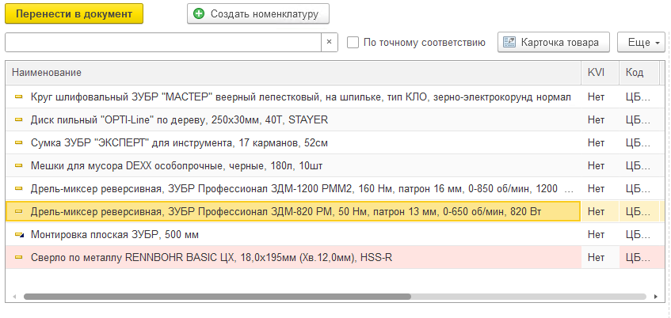
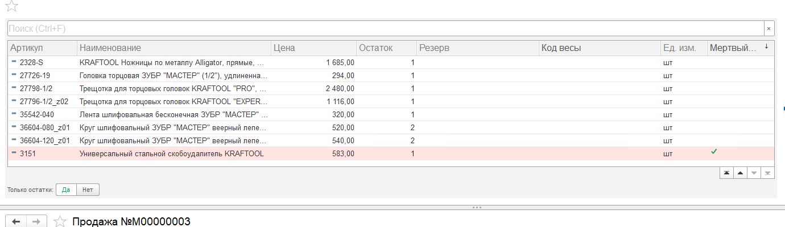
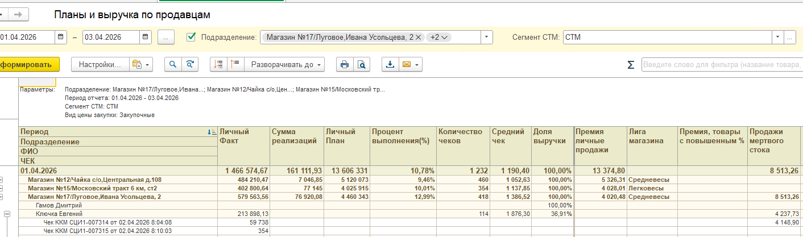
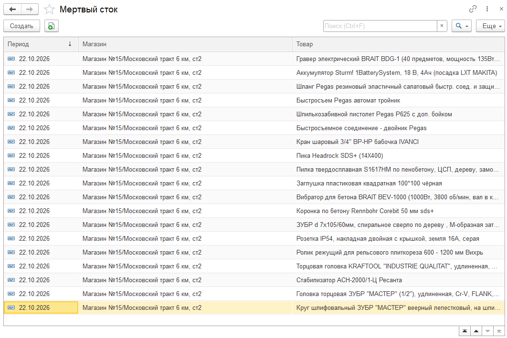

Срок
250 дней
Товар пришёл в ваш магазин 250 дней назад или раньше. После этого прихода его у вас не продавали.
Мёртвый сток
Розница
Делаем мир крепче
Мёртвый сток. Это товар, который долго лежит на складе и не двигается. Его не продают, покупатели его не берут. В нём заморожены деньги компании: он занимает место и приносит убыток вместо прибыли. В 1С:Касса такой товар подсвечен розовой строкой. За продажу премия видна в отчёте «Мотивация» в 1С:Торговля.
У каждого магазина свой список. В соседнем магазине тот же товар может быть обычным: без розовой строки и без этой премии.
Срок
250 дней
Товар пришёл в ваш магазин 250 дней назад или раньше. После этого прихода его у вас не продавали.
В подборе
Розовая
Так 1С:Касса подсвечивает неликвид, чтобы его было видно в списке. Галочка в столбце «Мертвый сток» значит то же самое: программа отметила эту позицию как неликвид.
В отчёте
7%
Премия за продажу этого товара. В отчёте «Мотивация» в столбце видна итоговая сумма премии.
Для покупателя цена обычная. Цвет строки виден только нам. Если товар закрывает его задачу, предложите его. Если не подходит, не предлагайте.
Сначала отличите цвета. Иначе легко принять выбранную строку за мёртвый сток. Ниже те же оттенки, что в программе.
Так 1С:Касса подсвечивает неликвид. За продажу премия видна в отчёте «Мотивация» в 1С:Торговля.
Жёлтым подсвечено то, на чём стоит курсор. К премии это не относится.
Заказ клиента и помощник продаж. Розовая строка в списке наименований.
В 1С:Касса неликвид подсвечен розовым. Галочка в столбце «Мертвый сток» подтверждает: это и есть неликвид.
Отчёт «Мотивация» в 1С:Торговля. В столбце видна итоговая сумма премии.
Когда товар подбирают в заказ клиента или в помощнике продаж, неликвид тоже может быть розовым. На кассе смотрите подсветку в 1С:Касса: там же стоит галочка.

Розовая строка здесь и есть подсветка неликвида. Галочка в столбце «Мертвый сток» говорит о том же: программа отметила эту позицию. Если галочки нет и строка не розовая, это обычный товар.

Премию за продажу смотрите в отчёте «Мотивация» в 1С:Торговля. На экране это окно называется «Планы и выручка по продавцам». Выберите свой магазин, поставьте период и нажмите «Сформировать».
Нужный столбец справа. Он называется «Продажи мертвого стока». В нём видна итоговая сумма премии. Она стоит в строке магазина и в строке продавца. Под ними идут чеки. По чекам видно, из каких продаж сложилась эта сумма.

Рядом стоят другие начисления. Мёртвый сток читайте только в последнем столбце.
| Столбец в отчёте | Что в нём |
|---|---|
| Премия личные продажи | Премия за личные продажи. Лига магазина в ней уже учтена. |
| Лига магазина | Лига вашей точки: тяжеловесы, средневесы или легковесы. |
| Премия, товары с повышенным % | Другая премия. Это не мёртвый сток. |
| Продажи мертвого стока | 7% за проданный мёртвый сток. Смотрите этот столбец. |
Берётся цена товара из мёртвого стока. От неё считается 7%. В отчёт попадает уже готовая цифра за выбранный период. Умножать в уме ничего не нужно.
Подставьте цену со строки. Справа будет сумма, которая встанет в отчёт за эту позицию. Если продаж несколько, в столбце они уже сложены.
Пример со снимка кассы: скобоудалитель стоит 583 ₽, за эту позицию в отчёте 40,81 ₽.
| Цена товара | 7% в отчёте |
|---|---|
| 500 ₽ | 35 ₽ |
| 1 000 ₽ | 70 ₽ |
| 2 000 ₽ | 140 ₽ |
Каждый день обработка «Анализ мертвого стока» собирает список заново. В него попадает товар точки, у которого последний приход был 250 дней назад или раньше и после этого прихода продаж не было.
Посмотреть список можно в окне «Мертвый сток». На смене продавцу оно не нужно: хватает розовой строки и отчёта. Окно полезно, если надо сверить магазин и наименование.
| Столбец | Как читать |
|---|---|
| Период | День, на который товар числится мёртвым стоком. |
| Магазин | Точка, где он так числится. |
| Товар | Наименование. |

Если розовая позиция человеку подходит, предложите её. Свою сумму потом смотрите в правом столбце отчёта.